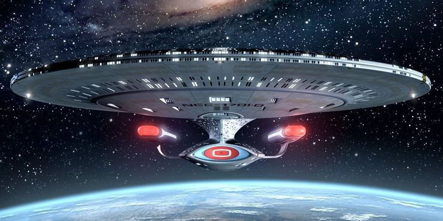
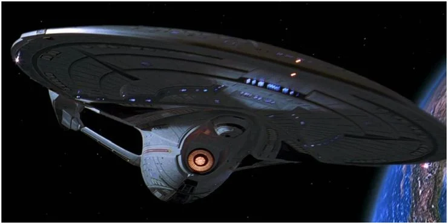
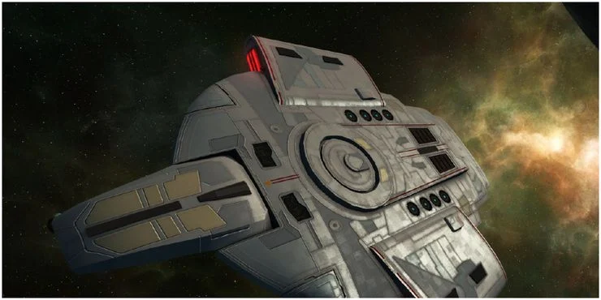

STARFLEET CLASS SHIP DEVELOPMENT

GALAXY CLASS NCC 102183
The NCC 102183, is known as the its speed. It can travel with 26 WP. It is a hybrid earth and andorian made ship. NCC 102183 is created for exploration It good capacity and can provide resource for about 10k human/5 earth year.
The NCC 102183, is known as the its speed. It can travel with 26 WP. It is a hybrid earth and andorian made ship. NCC 102183 is created for exploration It good capacity and can provide resource for about 10k human/5 earth year.

GALAXY ZORO 183
The NCC 102183, is known as the its speed. It can travel with 26 WP. It is a hybrid earth and andorian made ship. NCC 102183 is created for exploration It good capacity and can provide resource for about 10k human/5 earth year.
The NCC 102183, is known as the its speed. It can travel with 26 WP. It is a hybrid earth and andorian made ship. NCC 102183 is created for exploration It good capacity and can provide resource for about 10k human/5 earth year.

GALAXY Silver ALPHA 9
GALAXY Silver ALPHA 9 is known as the its speed. It can travel with 26 WP. It is a hybrid earth and andorian made ship. NCC 102183 is created for exploration It good capacity and can provide resource for about 10k human/5 earth year.
GALAXY Silver ALPHA 9 is known as the its speed. It can travel with 26 WP. It is a hybrid earth and andorian made ship. NCC 102183 is created for exploration It good capacity and can provide resource for about 10k human/5 earth year.
Stardate: 2178-03-01 09932
Capten Shran from Andorian will help to save humans.
A small artificial blackhole on our solarsystem have been eating the light from the our star, our planet been dark for 10 days now.
The Starship CSS3 was investigating the blackhole when the ship disapeard.
The Andorian blue Capten will once again help humans to the save the erath.
A small artificial blackhole on our solarsystem have been eating the light from the our star, our planet been dark for 10 days now.
The Starship CSS3 was investigating the blackhole when the ship disapeard.
The Andorian blue Capten will once again help humans to the save the erath.